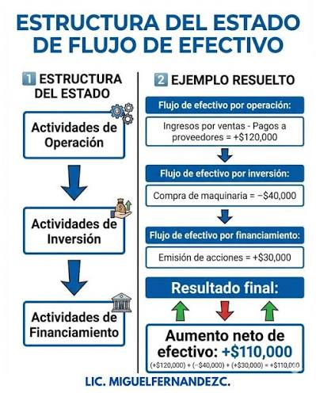

Diseño
Se utilizó un diseño limpio y profesional, buscando facilitar la lectura y presentar la información de una manera ordenada.
UNIVERSIDAD MARIANO GÁLVEZ DE GUATEMALA
Proyecto Final
Contabilidad II
La información contable constituye una herramienta fundamental para analizar la situación de una empresa, evaluar alternativas y apoyar la toma de decisiones administrativas.
Para la elaboración de esta página web se consideraron diferentes aspectos relacionados con el diseño, la organización y la presentación de la información.
Se utilizó un diseño limpio y profesional, buscando facilitar la lectura y presentar la información de una manera ordenada.
La página cuenta con un menú de navegación que permite acceder rápidamente a las diferentes secciones del proyecto.
La estructura fue diseñada para adaptarse a diferentes tamaños de pantalla, incluyendo computadoras, tabletas y teléfonos.
El contenido se divide en secciones para facilitar la comprensión de los conceptos y herramientas de la Contabilidad Administrativa.
HTML para la estructura, CSS para el diseño visual y elementos multimedia para complementar la presentación de los contenidos.
La Contabilidad Administrativa es una rama de la contabilidad que proporciona información relevante para apoyar a los administradores en la planificación, control y toma de decisiones dentro de una organización.
La información administrativa permite conocer el comportamiento de los costos, ingresos, recursos y resultados de una empresa.
Con esta información los administradores pueden identificar problemas, evaluar alternativas y tomar decisiones fundamentadas.
Aunque estas áreas de la contabilidad están relacionadas, cada una tiene objetivos y usuarios diferentes.
| Tipo | Objetivo | Usuarios principales | Enfoque |
|---|---|---|---|
| Contabilidad Administrativa | Apoyar la planificación, control y toma de decisiones. | Administradores y gerentes. | Interno y orientado al futuro. |
| Contabilidad Financiera | Informar sobre la situación financiera de la empresa. | Inversionistas, acreedores y usuarios externos. | Información histórica. |
| Contabilidad de Costos | Determinar y analizar los costos de producción. | Administradores y responsables de producción. | Costos y operaciones. |
Las herramientas de gestión permiten analizar información financiera y administrativa para tomar decisiones empresariales.
Permite medir la capacidad de una empresa para generar beneficios utilizando sus recursos e inversiones.
Permite analizar qué tan adecuadamente se utilizan los recursos disponibles para alcanzar los objetivos.
Permite analizar las entradas y salidas de efectivo de una organización durante un período determinado.
Ayuda a determinar si resulta más conveniente fabricar internamente un producto o adquirirlo de un proveedor externo.
Permite estudiar la composición del patrimonio, los activos, pasivos y el capital de una empresa.
Permite evaluar posibles resultados futuros utilizando información financiera y diferentes escenarios.

El Valor Actual Neto permite determinar si un proyecto de inversión puede generar valor después de considerar la inversión inicial y los flujos de efectivo futuros.
De manera general, un VAN positivo indica que el proyecto puede generar valor por encima de la tasa de descuento utilizada.
La Tasa Interna de Retorno representa la tasa de rendimiento que hace que el VAN de un proyecto sea igual a cero.
La TIR puede utilizarse como referencia para comparar la rentabilidad esperada de una inversión con una tasa mínima requerida.

En esta sección se pueden incorporar fotografías, presentaciones, videos u otros recursos utilizados durante el desarrollo del proyecto.

Evidencia 1
Evidencia 2
Evidencia 3
Equipo de trabajo
Espacio destinado para colocar el enlace o recurso correspondiente a la presentación virtual del proyecto.
Ver presentaciónLa Contabilidad Administrativa proporciona información importante para planificar, controlar y tomar decisiones dentro de una organización.
Las herramientas financieras permiten evaluar diferentes alternativas y conocer los posibles resultados de las decisiones empresariales.
La utilización de recursos digitales facilita la organización y presentación de información contable de una manera clara y accesible.